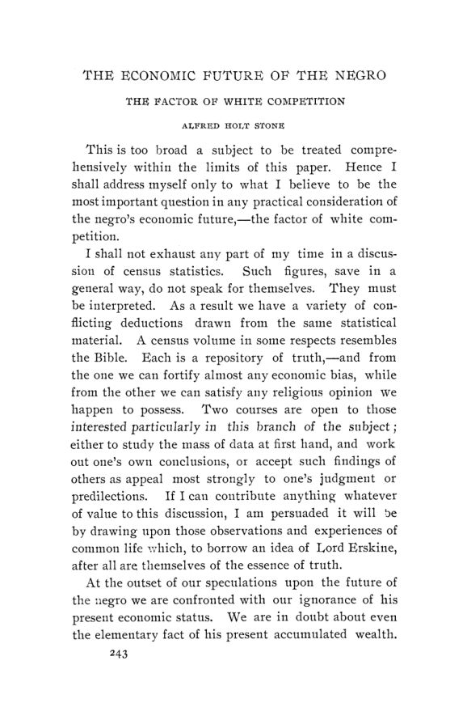

Baltimore, 1905: o amor à riqueza e o serviço público
Leitura: 7 min
Baltimore, dezembro de 1905: Taussig pergunta como atrair talento para o governo, Hollander cobra fatos da teoria da distribuição e dois Meyer divergem sobre quem deve fixar a tarifa ferroviária.


No discurso presidencial da décima oitava reunião anual, F. W. Taussig, presidente da associação, foi buscar em Nassau Senior o único traço da natureza humana que a economia clássica tomava como postulado:
“que todo homem deseja obter riqueza adicional com o menor sacrifício possível” (“that every man desires to obtain additional wealth with as little sacrifice as possible”)
A reunião se realizou em Baltimore de 27 a 29 de dezembro de 1905, e os trabalhos saíram em fevereiro de 1906 como nº 1 do vol. 7 da terceira série. Depois do discurso presidencial vieram cinco temas: o estado da teoria da distribuição, a regulação das tarifas ferroviárias, a propriedade municipal dos serviços públicos, a violência nas disputas trabalhistas e o futuro econômico da população negra. Cada um teve dois trabalhos ou um trabalho e debatedores.
Por que o capitão de indústria não vai para o governo?
Taussig decompôs o desejo de riqueza em quatro motivos: conforto, distinção, impulso de atividade e paixão pelo poder. Os três últimos, argumentou, podem ser satisfeitos no serviço público, desde que haja mandato longo e autoridade real. O sistema americano de freios e contrapesos, com muitos cargos eleitos e mandatos curtos, afastava os administradores capazes e abria espaço ao chefe político. A saída proposta: mandatos mais longos, menos cargos eletivos, maior poder de nomeação. Mas a questão, concluiu, era também de caráter, e não só de máquina política.
A teoria da distribuição é ciência?
Jacob H. Hollander respondeu que não, pelos critérios de Comte: faltava consenso e faltava previsão. A teoria vinha sendo feita por dialética e crítica de textos, sem coleta sistemática dos fatos. Propôs suspender a produção de manuais e fazer uma descrição econômica dos Estados Unidos de 1906, de sindicatos a juros e aluguéis urbanos. A teoria seria buscada
“não necessariamente a partir dos fatos, mas por meio dos fatos” (“not necessarily from the facts, but through the facts”)
Os debatedores reagiram. John Bates Clark negou o contraste entre o método do físico e o do economista. Carver sustentou que o método que Hollander chamava de dedutivo era o próprio método analítico que ele defendia. Seager, autor de manual, defendeu escrever manuais. Rosewater leu o trabalho como pedido de mais recursos para pesquisa.
Quem deve fixar a tarifa ferroviária?
Hugo R. Meyer argumentou que as tarifas americanas, embora pareçam arbitrárias, são fixadas pela competição entre ferrovias, hidrovias e centros produtores, e que a Interstate Commerce Commission tentara legislar por conta própria ao condená-las. Fixar tarifa, disse, é função legislativa.
Balthasar H. Meyer, de Wisconsin, respondeu que muitas tarifas não registram forças de mercado, mas improvisos, pressões de grandes embarcadores e más soluções de compromisso. Defendeu dar à comissão poder de fixar tarifas e de examinar a contabilidade das ferrovias, e encerrou:
“ou propriedade e operação pelo governo, ou controle governamental rigoroso” (“either government ownership and operation, or rigid governmental control”)
A cidade deve ser dona da água, da luz e do bonde?
Frederic C. Howe defendeu a propriedade municipal como expressão da democracia e citou resultados de usinas de luz e serviços de água em Detroit, Chicago, Cleveland e Nova York. Winthrop M. Daniels pediu o teste financeiro: a cidade presta serviço igual a preço autossustentável menor? Com a análise de Leonard Darwin sobre a experiência britânica, concluiu que a evidência era indeterminada e preferiu uma política de concessões bem desenhada.
Quanta violência há nas greves?
H. W. Farnam propôs melhorar as estatísticas de greves do Bureau of Labor, que cobriam 1881 a 1900, medindo sua magnitude e classificando as causas. T. S. Adams, com números compilados por Slason Thompson, comparou a violência das greves com outras formas de violência e argumentou que o problema maior era a coerção moral que a cercava. Propôs uma comissão de especialistas para fomentar a negociação coletiva e, em último caso, arbitrar.
Qual o futuro econômico da população negra?
A última sessão teve dois trabalhos com conclusões opostas. W. E. B. Du Bois descreveu quatro caminhos tentados desde a emancipação, entre eles a terra própria e a “economia de grupo”, e apontou como condições do avanço a escola, a justiça e o direito de voto. Alfred Holt Stone, a partir de sua experiência como fazendeiro, tratou da competição dos trabalhadores brancos e imigrantes. M. B. Hammond defendeu combinar a observação local com os números do censo.
Na minha leitura
Na minha leitura, o discurso de Taussig é o texto mais atual do volume. Ele trata o recrutamento para o setor público como problema de incentivos: se o talento busca distinção, poder e realização, um cargo com mandato curto, autoridade fatiada e eleição a cada um ou dois anos não oferece nada disso, e o espaço fica com quem opera a máquina por fora. A proposta de concentrar responsabilidade, com mandatos mais longos e menos cargos eletivos, é a mesma que reaparece sempre que se discute capacidade estatal. E ele mesmo ressalva que é uma questão de grau, não de abolir os controles.
A sessão sobre distribuição e a sessão ferroviária tratam, no fundo, da mesma dificuldade de método. Hollander cobra fatos antes de teorias; os dois Meyer discutem se as tarifas existentes refletem forças de mercado ou discricionariedade, e cada um cita casos a seu favor sem uma base comum de dados. O debate sobre propriedade municipal repete o padrão: Howe e Daniels leem as mesmas estatísticas britânicas de modo oposto, e Daniels lembra que uma média de preços nada diz sem densidade, custo do carvão e depreciação. A lição que tiro é a de Hammond: observação local e estatística agregada precisam corrigir uma à outra.
Glossário
- Capitão de indústria
- expressão da época para o dirigente de grandes empresas.
- Freios e contrapesos
- divisão de poderes entre executivo, legislativo e cargos eleitos, que limita cada um.
- Chefe político (boss)
- líder partidário que controla nomeações e votos de fora da estrutura formal do governo.
- Teoria da distribuição
- parte da economia que explica como o produto se divide em salários, juros, lucros e renda da terra.
- Fundo de salários
- doutrina clássica segundo a qual os salários dependem de um fundo de capital previamente reservado.
- Produtividade marginal
- teoria que remunera cada fator pelo acréscimo de produto da última unidade empregada.
- Sistema de pontos-base (basing point)
- esquema em que as tarifas para uma região se calculam a partir de certos centros de distribuição.
- Tarifa por distância
- tarifa ferroviária proporcional à distância percorrida, sem considerar a concorrência.
- Propriedade municipal
- prestação de serviços como água, luz, gás e bondes por empresas da própria cidade.
- Concessão (franchise)
- direito dado por uma cidade a uma empresa privada para explorar um serviço público.
- Lockout
- paralisação decidida pelo empregador, que fecha o estabelecimento aos trabalhadores.
- Arbitragem compulsória
- solução de conflitos trabalhistas por decisão obrigatória de um órgão público.
Artigos desta edição
- The Love of Wealth and the Public Service — F. W. Taussig; discurso presidencial (pp. 1–23). Taussig parte do postulado de Senior e o declara insuficiente. Decompõe o desejo de riqueza do capitão de indústria em amor ao conforto, desejo de distinção, impulso de atividade e paixão pelo domínio, e nota que a canalização desses motivos para a indústria trouxe ganhos ao substituir o ideal militar. Pergunta se o mesmo talento pode servir ao governo e aponta obstáculos: freios e contrapesos, muitos cargos eleitos, mandatos curtos e o surgimento do chefe político. Compara com os administradores coloniais britânicos e a burocracia prussiana, sem propô-los como modelo. Propõe mandatos longos, menos eleições e mais poder de nomeação, e conclui que tudo depende do caráter do povo. JSTOR
- The Present State of the Theory of Distribution — Jacob H. Hollander (pp. 24–45). Hollander reconstitui a história da teoria da distribuição, de Ricardo à queda do fundo de salários e às teorias de Walker, Clark e Marshall, e conclui que nenhuma doutrina interpreta a distribuição moderna. Pelos critérios de Comte, consenso e previsão, a teoria não seria ciência positiva. Classifica os métodos em histórico, metafísico e analítico e sustenta que o economista não usou indução de verdade. Propõe interromper a produção de manuais e reduzir a especulação, em favor de uma descrição sistemática da economia americana de 1906: sindicatos, remuneração, lucros, corporações, juros, bancos, posse da terra e aluguéis. Pede, para isso, acesso a documentos, tempo e verbas de investigação. JSTOR
- The Present State of the Theory of Distribution-Discussion — John Bates Clark, Roswell C. McCrea, Frank A. Fetter, T. N. Carver, Henry R. Seager, Victor Rosewater e David Kinley (pp. 46–60). Clark e Carver defendem o valor da teoria recente; McCrea examina, em tom tentativo, a teoria da produtividade marginal; Fetter defende o papel auxiliar do método histórico; Seager defende os manuais; Rosewater apoia o pedido de verbas; Kinley insiste que não há boa prática sem boa teoria. JSTOR
- Government Regulation of Railway Rates — Hugo R. Meyer (pp. 61–68). Hugo R. Meyer sustenta que as tarifas ferroviárias americanas parecem arbitrárias, mas são fixadas pela competição entre ferrovias, hidrovias e mercados, e discriminam de modo honesto e inteligente. Lembra que os tribunais federais deram razão às ferrovias em 32 dos 35 casos decididos contra ordens da Interstate Commerce Commission. Acusa a comissão de ler na lei teorias que o Congresso não aprovou, como o direito às vantagens da localização e as tarifas pelo custo do serviço, e cita casos de pontos-base, moagem e importações. Argumenta que fixar tarifa é legislar e que a comissão não precisa desse poder para corrigir uma tarifa irrazoável. JSTOR
- Government Regulation of Railway Rates — Balthasar Henry Meyer (pp. 69–83). B. H. Meyer parte de que a ferrovia difere da empresa comum e de que o direito de regular está assentado há mais de um quarto de século. Rejeita a tese de que o tarifador apenas registra forças comerciais: muitas tarifas, diz, resultam de erro, de pressão de grandes embarcadores ou de compromissos ruins. Defende dar à comissão poder de fixar tarifas, com limites legais, e de examinar a contabilidade das ferrovias, condição para detectar descontos. Responde às objeções sobre investidores e sobre a experiência da Alemanha e da França. Conclui que as alternativas são a propriedade estatal ou o controle rigoroso, e escolhe o controle. JSTOR
- Discussion on Papers on Railway Rate Regulation — Frank H. Dixon, S. G. McPherson, Don C. Barrett, W. C. Fisher, F. B. Thurber, D. C. W. Thom e Hugo R. Meyer (pp. 84–112). Dixon vê nas teses de Hugo Meyer um laissez-faire extremo; McPherson compara balanços de ferrovias e empresas comuns; Barrett discute a tarifa por distância; Fisher defende a comissão; Thurber e Thom tratam de rebates e riscos da regulação; H. R. Meyer e B. H. Meyer trocam réplicas sobre fontes. JSTOR
- The Case for Municipal Ownership — Frederic C. Howe (pp. 113–132). Howe apresenta a propriedade municipal como expressão industrial da democracia e diz que o teste decisivo não é financeiro, mas de vida cívica. Ainda assim, afirma que ela paga: cita a usina de luz de Detroit, com custo por lâmpada inferior ao melhor preço privado, e os serviços de água de Chicago, Cleveland, Detroit, Boston e Nova York, com receitas acima de custos e juros. Invoca a experiência das cidades britânicas, com tarifas de bonde e gás mais baixas. Sustenta que, com os serviços nas mãos da cidade, cessariam as fontes de corrupção e os homens capazes entrariam na política: o bom governo viria com mais governo. JSTOR
- Municipal Ownership — Winthrop M. Daniels (pp. 133–143). Daniels admite que o balanço financeiro não esgota o valor de um serviço municipal, mas argumenta que o eleitor americano exigirá a pergunta central: a cidade presta serviço igualmente eficiente a um preço autossustentável menor que o da empresa privada? Examina a evidência britânica invocada por Howe e cita a análise de Leonard Darwin, segundo quem o resultado líquido não seria grande perda nem grande ganho. Considera indeterminadas as comparações de custos e preços sem ajustar densidade, carvão e depreciação. Propõe, em vez da municipalização, uma política de concessões bem redigida e uma reforma que concentre a responsabilidade política e reduza o número de cargos eletivos. JSTOR
- Municipal Ownership-Discussion — Leo S. Rowe, John A. Fairlie, Milo R. Maltbie, J. Dorsey Forrest, Albert Shaw, Jeremiah W. Jenks, Richard T. Ely e F. B. Thurber (pp. 144–159). Maltbie trata das taxas de depreciação nas contas municipais britânicas; os demais comentam os trabalhos de Howe e Daniels. JSTOR
- The Quantitative Study of the Labor Movement — H. W. Farnam (pp. 160–175). Farnam elogia a série americana de estatísticas de greves, de 1881 a 1900, mas aponta duas falhas. Primeira: falta um índice único da magnitude das greves. Compara quatro medidas possíveis, número de greves, estabelecimentos, empregados e perda de salários, mostra que os picos mudam conforme a medida e discute os defeitos de cada uma. Segunda: a classificação das causas não revela seu sentido econômico. Propõe agrupar as greves por atitude das partes, separando as que buscam vantagens positivas das que resistem a economias patronais. Pelos seus cálculos, as greves contra economias fracassaram com mais frequência, sobretudo nos anos de crise. JSTOR
- Violence in Labor Disputes — T. S. Adams (pp. 176–206). Adams usa os números de Slason Thompson para 1902 a 1904, período que inclui a greve do antracito e os conflitos do Colorado, e conclui que a violência física nas greves é pequena perto de linchamentos, homicídios urbanos e acidentes industriais. O mal real seria a atmosfera de ameaça, boicote e intimidação, a violência moral. Aponta a aplicação desigual da lei, que pune a coerção dos trabalhadores e não a dos empregadores, como o uso da fome nas greves longas. Propõe nivelar a lei por cima e criar uma comissão de especialistas que promova a negociação coletiva e arbitre quando ela falhar, inclusive de forma compulsória. JSTOR
- Violence in Strikes-Discussion — Nicholas P. Gilman, George E. Barnett e W. B. Prescott (pp. 207–218). Gilman rejeita comparar a violência das greves com outros crimes; Barnett resume as três teses de Adams e discute se a violência diminui; Prescott, que participou da condução de muitas greves, diz não ter conhecido violência sistemática. JSTOR
- The Economic Future of the Negro — W. E. B. Du Bois (pp. 219–242). Du Bois propõe examinar a formação de classes econômicas entre os negros americanos e rejeita tratá-los como grupo homogêneo. Distingue quatro esforços após a emancipação: o dos antigos criados domésticos, o da indústria competitiva, o da posse da terra e o da “economia de grupo”, rede de serviços e negócios que atende a própria comunidade. Analisa a migração para as cidades, o preconceito racial, que só admite negros em substituição de grupo e com piores condições, e a eficiência. Sobre os dois milhões de trabalhadores comuns, aponta leis de contrato e vadiagem e a falta de justiça, e propõe escola, justiça e voto. JSTOR
- The Economic Future of the Negro. The Factor of White Competition — Alfred Holt Stone (pp. 243–294). Stone declara que não discutirá estatísticas do censo e que se apoiará em observações da vida comum. Questiona as estimativas da riqueza negra e a ideia de que a população começou do zero em 1865, lembrando os quase meio milhão de negros livres de 1860 e a posição dos escravizados no trabalho qualificado do Sul. Seu tema central é a competição dos trabalhadores brancos e imigrantes, que, diz, vinha deslocando o negro de ofícios e da construção. Compara contas de arrendatários italianos e negros numa fazenda e conclui que o problema principal seria de caráter e de vida doméstica das massas. JSTOR
- The Economic Future of the Negro: Discussion — Roscoe Conkling Bruce, Charles Lee Raper, Theodore Marburg, M. B. Hammond e H. W. Farnam (pp. 295–324). Bruce descreve o cinturão negro do Alabama; Raper e Marburg comparam as teses de Du Bois e Stone; Hammond defende usar o censo junto com a observação local; Farnam adverte contra generalizações apressadas. JSTOR
Fontes
- The Love of Wealth and the Public Service (pp. 1–23). JSTOR · Internet Archive (PDF)
- The Present State of the Theory of Distribution (pp. 24–45). JSTOR · Internet Archive (PDF)
- The Present State of the Theory of Distribution-Discussion (pp. 46–60). JSTOR · Internet Archive (PDF)
- Government Regulation of Railway Rates (pp. 61–68). JSTOR · Internet Archive (PDF)
- Government Regulation of Railway Rates (pp. 69–83). JSTOR · Internet Archive (PDF)
- Discussion on Papers on Railway Rate Regulation (pp. 84–112). JSTOR · Internet Archive (PDF)
- The Case for Municipal Ownership (pp. 113–132). JSTOR · Internet Archive (PDF)
- Municipal Ownership (pp. 133–143). JSTOR · Internet Archive (PDF)
- Municipal Ownership-Discussion (pp. 144–159). JSTOR · Internet Archive (PDF)
- The Quantitative Study of the Labor Movement (pp. 160–175). JSTOR · Internet Archive (PDF)
- Violence in Labor Disputes (pp. 176–206). JSTOR · Internet Archive (PDF)
- Violence in Strikes-Discussion (pp. 207–218). JSTOR · Internet Archive (PDF)
- The Economic Future of the Negro (pp. 219–242). JSTOR · Internet Archive (PDF)
- The Economic Future of the Negro. The Factor of White Competition (pp. 243–294). JSTOR · Internet Archive (PDF)
- The Economic Future of the Negro: Discussion (pp. 295–324). JSTOR · Internet Archive (PDF)
- Sumário da edição no JSTOR: Publications of the American Economic Association, 3ª série, vol. 7, nº 1.
Documento em domínio público (EUA, publicado antes de 1931), via JSTOR Early Journal Content e Internet Archive. Resumo e comentário do autor deste site, sem afiliação com a American Economic Association. Encontrou um erro? Escreva: a correção é publicada no próprio texto, com data.
← Nº 76 · Fairchild, 1905: vinte anos de lei fabril em Nova York Nº 78 · Smalley, 1906: os tribunais e o controle da tarifa ferroviária →